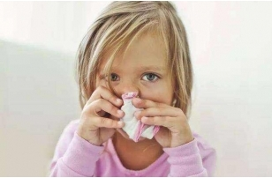
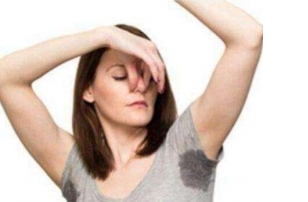
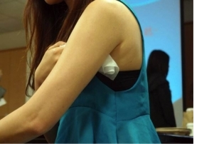

狐臭知识
-
经常和有狐臭的人在一起，会被传染吗?
“经常和一个有狐臭的人在一起，这两天我发现自己好像也有了，是被传染的么?我该怎么办?”经常会有患者咨询到狐臭传染性... -
狐臭青春期后会自动消退吗
狐臭这个问题一直都困扰着很多的人，这种疾病会严重的影响患者的社交事宜。因此，对于有狐臭疾病的人来说，一定要选择恰当... -
为何狐臭如此青睐女性呢？
出汗时产生的异味，对于女性是一种很大的困扰。尤其是一些正值花季的少女们，他们饱受腋臭的折磨，学习没劲，信心力不足等... -
产生腋臭的后天因素有哪些 你知道吗
说到腋臭，相信大家多少有些了解。然而很多人都单纯的以为腋臭是由于先天原因造成的，殊不知，一些后天因素也是会招惹上该... -
狐臭的十大诊断妙招
1、从家族中诊断腋臭有明显的遗传性，一般观察家人中是否有患病的人，也可以辅助诊断。父母患病，自己患病的几率很大。另... -
如果狐臭不治疗 会越来越严重吗
狐臭不治疗会越来越严重吗?我想这是所有狐臭患者都比较关心的问题，狐臭多是腋下散发出一股难闻的臭味，如果不治疗的话，... -

儿童有腋臭的危害竟然这么大!
可能很多人心理都会有这么一个疑问：狐臭不痛不痒，为什么还要治疗?是啊，为什么呢?带着疑问询问了知名的狐臭专家，听完... -
有狐臭的人都有哪些症状呢
狐臭又称为臭汗症，是由腋窝、外阴、口角等部位的大汗腺排泄的汗液，脂肪酸比普通人高，呈淡黄色，较浓稠;脂肪酸达到一定... -

那些有狐臭的人 是真的闻不到自己的味道吗?
人体的汗腺分为两种，一种小汗腺大概占9成，排汗较稀，一般是没有味道的。另一种大汗腺(又称顶浆腺)，只集中分布在腋下... -
体臭和狐臭有区别吗?
虽然狐臭和体臭都会产生臭味,但是这两种是不一样的疾病，但是不管是狐臭还是体臭，那么都是令人讨厌的,并且对于患者的生... -

怎么鉴别狐臭这种疾病呢
早期狐臭疾病没有什么明显的症状，等发现自己患病了，就有可能会盲目的进行治疗。那么大家在治疗这种疾病之前，大家要怎么... -

哪些人群容易患狐臭?
很多人不明白自己为什么会患上狐臭，狐臭往往会给人们的生活带来很多的不便，因为狐臭的刺鼻气味使人感到特别的厌烦，闻到... -
孩子有腋臭怎么办? 需要治疗吗?
腋臭之痛一般人都难以承受，更何况是孩子，在最纯真的童年早早地学会小心谨慎，花季青春过早的凋零，这些本不该属于少男少... -
运动后出汗和狐臭一样吗?
狐臭对于很多运动爱好者来说是一件很头疼的事情，运动出汗会引起腋臭吗?特别是在夏天的时候，稍微运动就会出汗。有的人运... -
这些不良习惯会加重狐臭的 你有吗?
1. 不良的饮食习惯会加重腋臭如辣椒、芥末等辛辣刺激食物，有刺激作用，会加重炎性，而"有味"食物如葱、蒜等则会使味...